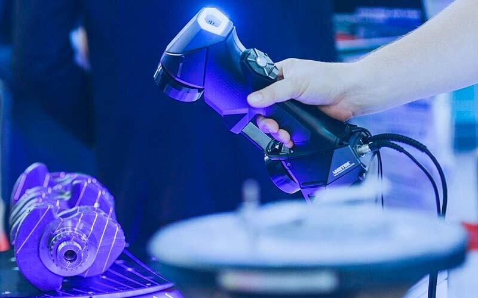

Главной задачей проекта является сохранение истории, которую несет в себе картинная рама. Каждый узор и трещина — это летопись времени, которую мы переводим в цифровой формат.

Новизна метода заключается в интеграции высокоточного сканирования в процесс реставрации. Это позволяет не только изучать объект, но и с безупречной точностью проектировать недостающие элементы декора для их последующего изготовления.